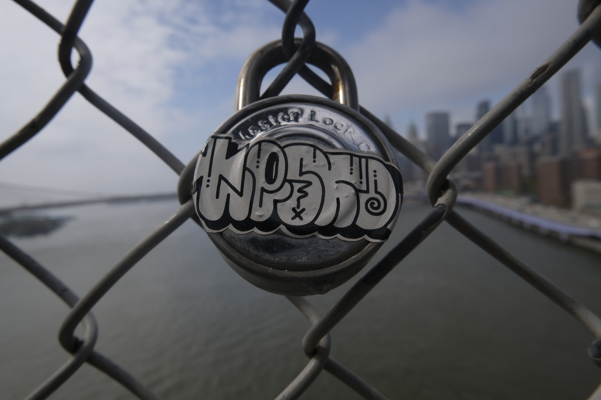

This is the original image that was taken in the summer. Although there is a deep depth of field, the fence is still in focus. This image would be much more elevated if it was just the graffiti on the lock.
This is the altered photo in which I used the field blue feature to blur the background. You can more clearly lock on the graffiti on the lock empthsizing that this is the focal point.